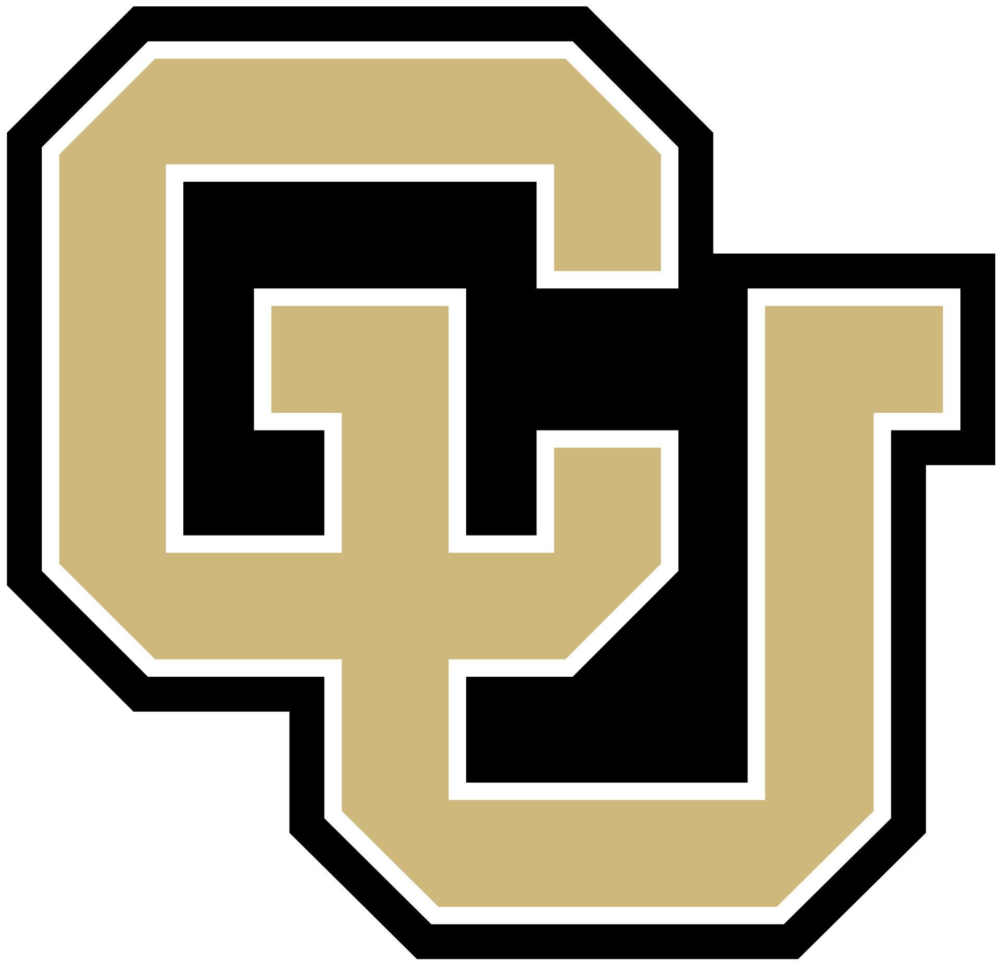
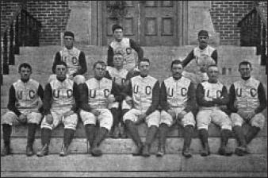

| Summary | History | Championships | Notable Players |
The Colorado Buffaloes football program represents the University of Colorado Boulder in college football at the NCAA Division I FBS level. The team is a member of the Pac-12 Conference, having previously been a charter member of the Big 12 Conference, and will rejoin the Big 12 beginning in the 2024 season. Before joining the Big 12, they were members of the Big Eight Conference. The CU football team has played at Folsom Field since 1924.[1] The Buffs all-time record is 716–520–36 (.577 winning percentage) as of the 2022 season. Colorado won the 1990 National Championship. The football program is 27th on the all-time win list and 40th in all-time winning percentage.
Beginning in 1890, the Buffaloes have appeared in 29 bowl games (36th all-time), and won 27 conference championships, 5 division championships and an AP national championship in 1990. Folsom Field was built in 1924, and since then, Colorado has a 308–169–14 record at home through the 2016 season. The road game against the Nebraska Cornhuskers on November 24, 2006, was Colorado's 1,100th football game. The game on September 12, 2015, against Massachusetts was the school's 1,200th football game.
Colorado won one national championship in football for 1990.